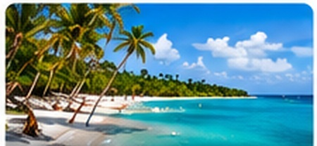
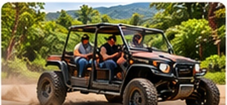
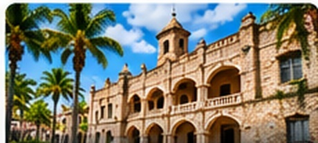
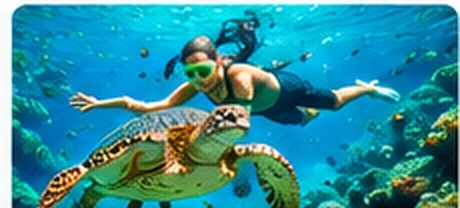

Saona Island
Island & Beach Fun
Saona, Catalina, catamaran cruises, snorkeling, swimming and private beach experiences.
Discover the beauty, culture and adventure of the Dominican Republic.

Saona, Catalina, catamaran cruises, snorkeling, swimming and private beach experiences.

Dune buggies, ATVs, ziplining, caves, cenotes and other high-energy Punta Cana adventures.

Santo Domingo, countryside experiences, shopping and customized private sightseeing.

Snorkeling, catamarans, water activities and unforgettable days on the Caribbean Sea.